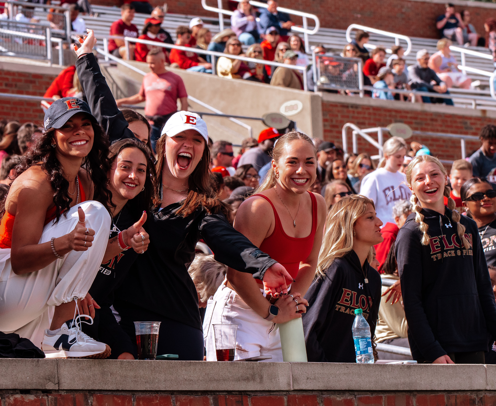

Home
Pictures
Here are some photographs of things I love: my dogs, competing in sports, and watching sports.
One things I love is my two dogs: Libby and Dilly.
I am also a huge sports fan, more specfically, an Elon sports fan. 